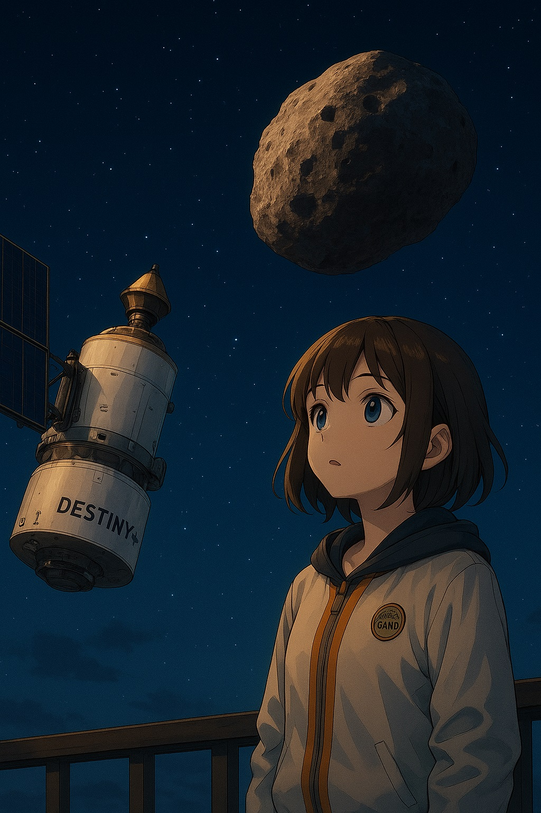

宇宙の塵を追いかけて｜エミリー、DESTINY+に夢を託して
流れ星に願ったころ
小さなころ、エミリーは流れ星を見るたびに願いごとをした。
「宇宙を旅してみたい」
誰かに笑われるような夢だったかもしれない。でもそのたびに、彼女は心の奥でこう思っていた。
宇宙は、遠くにあるものじゃない。心が向かう場所だ。
ある日、彼女はDESTINY+（デスティニープラス）という名の探査機を知る。
JAXAとISASが開発した、小さな衛星。目的地は、小惑星“Phaethon（フェートン）”。
フェートンは、ふたご座流星群の母天体とされる小惑星。
「塵を追いかける」という、不思議で詩的な旅の物語が、ここから始まっていた。

塵の正体
宇宙の塵（ダスト）。
名前だけ聞くと、なんてことない微粒子のように思える。
でもそれは、星の記憶そのものだった。
恒星が爆発して飛び散った粒。
彗星が軌道を描くたびに残した光のかけら。
小惑星同士の衝突が生んだ鉱物の破片。
それらが宇宙空間を漂い、ある日、地球の大気に触れたとき、
わたしたちはそれを「流れ星」と呼ぶ。

DESTINY+ の旅
DESTINY+ は、2025年に打ち上げ予定のミッションだった。
小型で軽量な設計に、最先端のイオンエンジンが搭載されている。
地球を出発し、月の重力を利用して加速し、数年をかけてフェートンに接近する。
目的は、直接ダストを観測・分析し、どこから来たのかを解明すること。
DESTINY ＝ 運命。
その名に“+”がついている理由は、「運命のその先を見たい」という人類の願いだと、エミリーは感じていた。

宇宙と出会うということ
宇宙を旅する探査機は、科学的な使命だけでなく、
わたしたちの“感性”をも乗せている。
DESTINY+ は、塵を追いながら、
宇宙の静けさ、太陽からの放射線、未知の粒子たちを記録し続ける。
「塵の中には、星のはじまりがあるかもしれない」
「塵は、終わりじゃなく、新しい星の材料なんだ」
そんな声が、どこかから聞こえてきそうだった。
エミリーはふと思う。
宇宙を知るって、わたし自身を知ることなのかもしれない。

塵が伝える、星の記憶
わたしたちは、光るものばかりを見つめてきた。
星、銀河、爆発、そして輝く太陽。
でも、DESTINY+ が見ているのは、光の“かけら”たち。
わずか数ミクロンの粒子。
それでも、それらは確かに語っている。
「ここに、星があった。」
「わたしたちは燃え、そして散り、あなたに届いた。」
流れ星を見上げるその瞬間、
エミリーはもう願わない。
ただ、耳を澄ませる。

エピローグ｜未来を追いかける塵
DESTINY+ は、まだ旅の途中。
けれど、すでにわたしたちに多くのことを教えてくれた。
塵が、ただの“ごみ”ではなく、
宇宙の記憶装置だということ。
小さな衛星が、
人類の詩的感性を宇宙へ届けてくれているということ。
そして──
「願いごとは、叶えるだけじゃなく、追いかけるものだ」と。
エミリーは今夜も夜空を見上げる。
DESTINY+ が進むその方向に、
彼女の未来も、ゆっくりと浮かんでいる気がした。